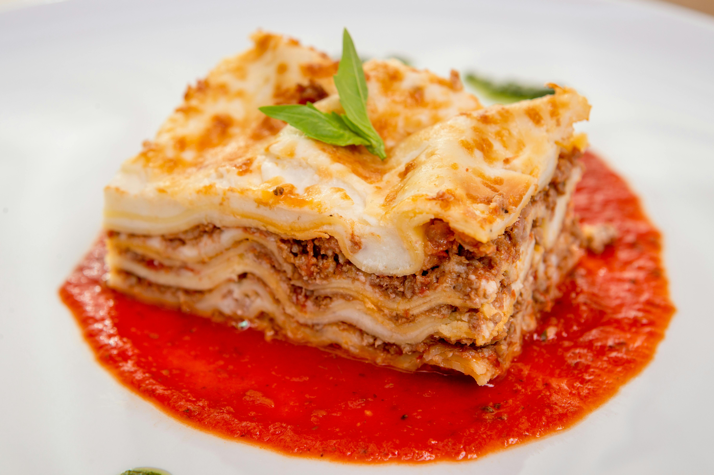

Lasagna

Lasagna is a classic Italian dish known for its rich, comforting layers.
The recipe begins with a well-seasoned meat sauce made from ground meat, onion, garlic, tomatoes, and aromatic herbs, slowly cooked to deepen the flavor. At the same time, a creamy béchamel sauce is prepared to add smoothness to the dish. In a baking dish, layers of lasagna sheets, meat sauce, and béchamel are assembled, repeating the process until the dish is filled. A generous amount of grated cheese is added on top to create a golden, flavorful crust.
Once assembled, the lasagna is baked until it is hot throughout and beautifully gratinated, with melted and slightly browned cheese on top.
The result is a balanced dish with distinct textures, combining creamy, juicy, and lightly crispy elements. Perfect for family meals or special occasions, lasagna stands out for its comforting taste and versatility, allowing for variations with vegetables, different types of meat, or even vegetarian versions.
Ingredients:
- 12 lasagna noodles
- 1 pound ground beef
- 2 cups marinara sauce
- 1 cup ricotta cheese
- 2 cups shredded mozzarella cheese
- 1/2 cup grated Parmesan cheese
- 2 cloves garlic, minced
- 1 tablespoon olive oil
- Salt and pepper to taste
Instructions:
- Preheat the oven to 375°F (190°C).
- Cook the lasagna noodles according to the package instructions. Drain and set aside.
- In a large skillet, heat olive oil over medium heat. Add minced garlic and cook until fragrant.
- Add ground beef to the skillet and cook until browned. Drain excess fat.
- Stir in marinara sauce, salt, and pepper. Simmer for 10 minutes.
- In a baking dish, spread a thin layer of meat sauce. Layer with noodles, ricotta cheese, meat sauce, and mozzarella cheese. Repeat layers until all ingredients are used, ending with a layer of mozzarella cheese on top.
- Sprinkle grated Parmesan cheese over the top layer.
- Cover with aluminum foil and bake for 25 minutes. Remove foil and bake for an additional 25 minutes or until the cheese is bubbly and golden brown.
- Let the lasagna cool for a few minutes before serving. Enjoy!
Back to Home Page